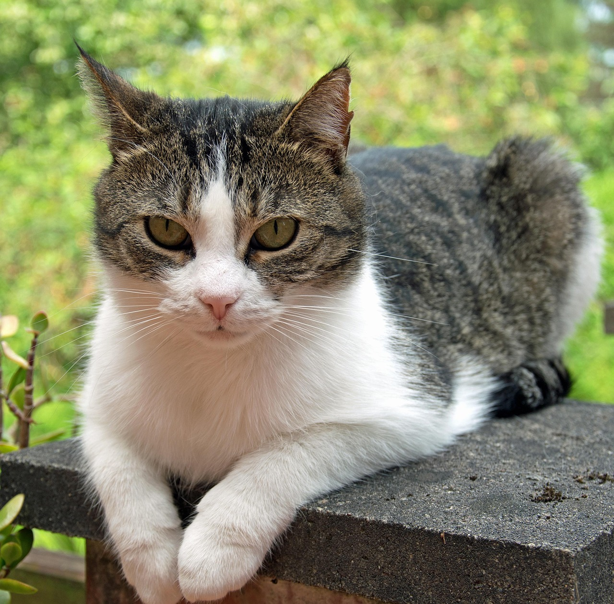

Mário Osvaldo
1200 seguidores2.000 seguindo
Digital College • Fortaleza/CEdigitalcollegebr
🏆| Maior escola de IA e habilidades digitais do Brasil.
🧑💻| + de 10000 alunos atendidos.
🤝| + 80% de empregabilidade
bio.digitalcollege.com.brdestaque 1

destaque 2

destaque 3
destaque 4
destaque 5
destaque 6
destaque 7